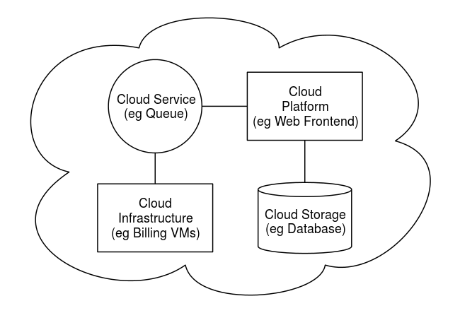

Architecture :
Cloud architecture,[110] the systems architecture of the software systems involved in the delivery of cloud computing, typically involves multiple cloud components communicating with each other over a loose coupling mechanism such as a messaging queue. Elastic provision implies intelligence in the use of tight or loose coupling as applied to mechanisms such as these and others.

Cloud engineering
Cloud engineering is the application of engineering disciplines to cloud computing. It brings a systematic approach to the high-level concerns of commercialization, standardization, and governance in conceiving, developing, operating and maintaining cloud computing systems. It is a multidisciplinary method encompassing contributions from diverse areas such as systems, software, web, performance, information, security, platform, risk, and quality engineering.
Read More...